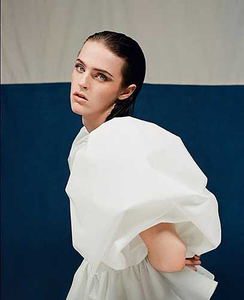

Feltöltési jelentés:
000_IS_2101_Beauty_Trendreport_PZK_1.indd
Feltöltve: 2021 Mar 2., 14:37
Hiányzó képek:
TRESemmé Collagen+Fullness Hajbalzsam vékonyszálú hajra 400ml - 1479 Ft.tif
TRESemmé Collagen+Fullness Sampon vékonyszálú hajra 400ml - 1479 Ft.tif
Mission Eclat Koncentrált Esszencia 16000 Ft 3409 0 mood.jpg
Avon True Matte Legend ajakrúzs Alluring 1500 Ft 3055 1 (1).jpg
Avon Professzionális bontókefe 1999 Ft 1233 6.jpg
Vichy Dercos Energiát adó sampon (200ml).jpg
La Roche-Posay Tolériane Sensitive Tinted Light.jpg
Kis felbontású, használhatatlan képek:
christopher-john-rogers-presentation-spring-summer-2021-paris-fashion-week-france-shutterstock-editorial-10933962o.jpg ::: 93 dpi
